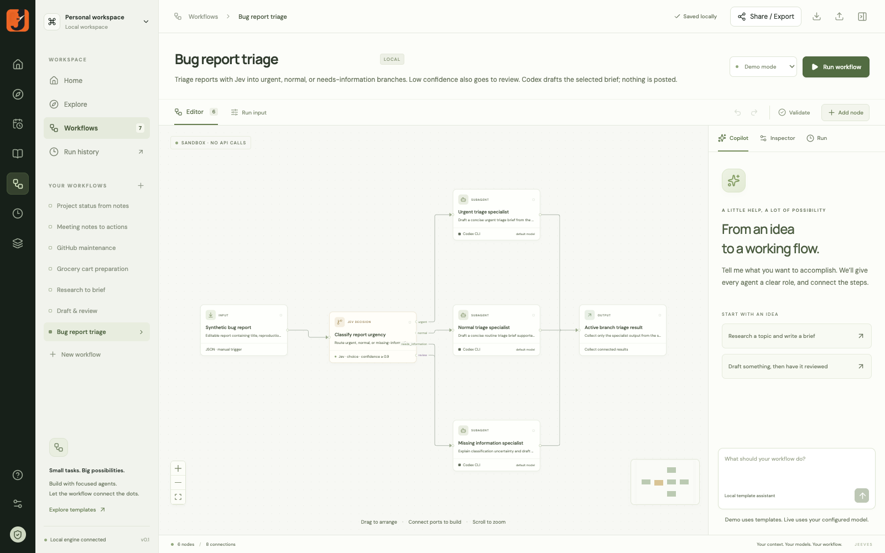

Good work. In good order.
Focused agents. Visible decisions.
Workflows worth keeping.
Focused agents. Visible decisions.
Workflows worth keeping.
Start in chat. Connect the steps.
Keep what works.
Export a portable skill.
Bring it to a compatible harness.
SKILL.md scripts/run.cjs workflow.json
Agents. Decisions. Handoffs.
One workflow you can run again.

Chat → workflow → portable skill